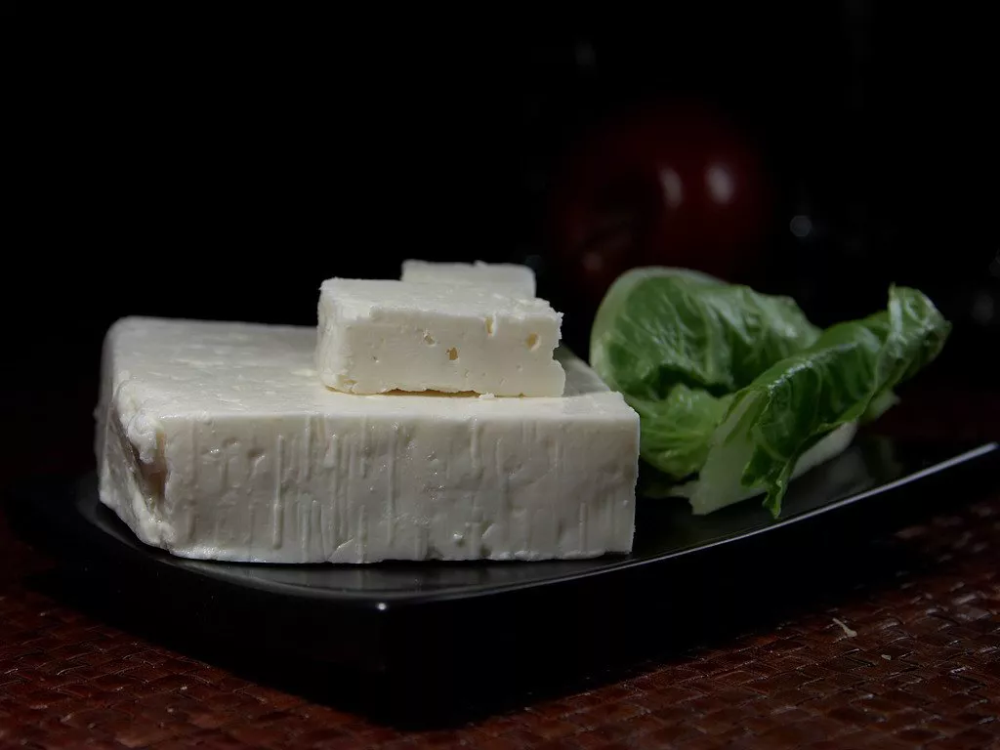
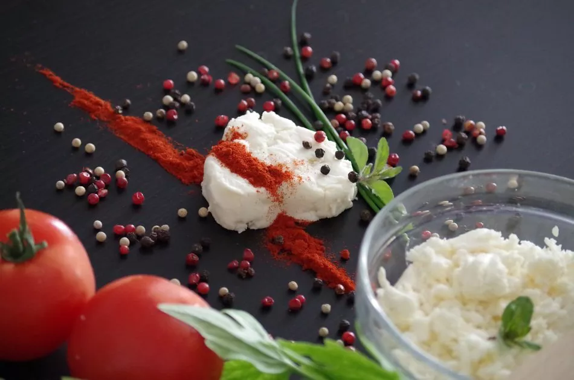

Cheeses that Are Surprisingly Similar
Cheese is a food that’s consumed pretty much worldwide. It is a traditional foodstuff of Western culture - in many Asian countries, dairy, in general, is missing from the menu. As such, there are literally hundreds of cheese varieties - some countries have dozens of them. There are many cheese varieties that are unique to their region, specialties like Casu marzu or other delights that when you discover them, you’ll feel like hitting the jackpot at the Lucky Nugget online pokies. There are, in turn, varieties of cheese that are made and consumed in different countries but they are so similar that you can easily mistake one for another.
Feta
Feta is one of the best-known cheese varieties in the world. This traditional - and protected - Greek cheese is made of sheep’s milk (or it can contain goat’s milk for up to 30% of the raw material). It has a crumbly texture and a distinctive flavor.
One of the cheeses that are surprisingly similar to feta is telemea, the traditional Romanian brined cheese variety. The raw material used for its production varies between regions - traditionally, it’s made of cow’s milk but similar cheeses using sheep’s milk, goat milk, even buffalo’s milk are also sold under the same name. It is traditionally sold in farmers’ markets directly from the brine, it has a crumbly texture and a tangy taste - and when it’s aged for a while, it becomes creamy on the inside.
Brânza de burduf
Brânza de burduf is a traditional Romanian kneaded cheese traditionally made with sheep’s milk. It is made of Caș cheese (a semi-soft fresh cheese made of sheep or cow milk) that is cut into small pieces, mixed in a (wooden) bowl, then placed in a sheep’s stomach or sheepskin to age. “Burduf” has a distinctive taste - its flavor is pungent and strong, often slightly tingling, while its texture is soft, almost creamy.
Bryndza is a cheese that’s almost interchangeable with Burduf. This Slovakian cheese has a similar texture, and strong smell and taste. The major difference between the two is that the Slovakian variety is not aged in a sheep’s stomach but a wooden pot.
Ricotta
Ricotta is one of the more interesting cheese varieties you can taste. It is creamy and soft with a distinctive flavor - it is available in natural and salted varieties and can be used in a cornucopia of recipes (or eaten as is). What makes it special is its raw material: whey. The whey is left to ferment for 12 to 24 hours, then heated to near boiling that causes a fine curd to precipitate. It is then strained - the result is a slightly sweet product. Urda, a cheese variety common in Eastern Europe, is surprisingly similar: made from goat, sheep, or cow’s milk. Traditionally, urda is used in desserts such as a filling for crépes and “plăcintă”, a pastry traditionally filled with soft cheese or apples.
Credit: Cheese Bloger



For order, please contact:
📞 03.93.83.2808
✉️ sales@vinacheese.com
📌 Pick up at our store | 347/19 Chu Van An street, Binh Thanh district, Ho Chi Minh City